GÖRÜNTÜ İZLEME VE TESPİT TUTANAĞI
Feriköy Polis Merkezi Amirliğinin 2022/1298 suç numaralı EVDEN HIRSIZLIK konusuna istinaden müşteki Gülin GÜNER isimli şahsın beyanında Kaptanpaşa Mah. Darülacaze Cad. Cevahirler Blok No:29 iç kapı :12 Şişli/İstanbul sayılı adreste ikamet ettiğini 08/06/2022 günü yöneticinin kendisini aradığını ve evimin kapı göbeğinin kırık ve evin dağılmış olduğunu söylemesi üzerine eve geçtiğini yaptığı kontrollerde 6 adet 22 ayar bileziklerinin çalındığını söylemesi üzerine; Şişli Asayiş Büro Amirliği 8970 kod nolu ekip ve şişli devriye ekipler amirliğine bağlı 89268 kod nolu mobil park ekibi ile beraber şüpheli şahsın olay yerine geldiği güzergahta yapmış olduğumuz kamera çalışmalarında görüntülerin bir kısmı teknik arızalar sebebi ile dijital ortamda temin edilememiş telefon ile çekilmek sureti ile temin edilen kamera görüntüleri tarafımızdan izlendiğinde; WhatsApp Video 2022-06-16 at 22.08.53 isimli kamerada 08/06/2022 günü kamera saatine göre 12:26 da şüpheli şahıs çizgili gömlekli beyaz poşetli tabanları beyaz ayakkabılı şüpheli şahsın gönül sokak üzerinde ilerlediği ve Feriköy mezarlığına doğru ilerlediği tarafımızca görülmüştür.
FOTO-1
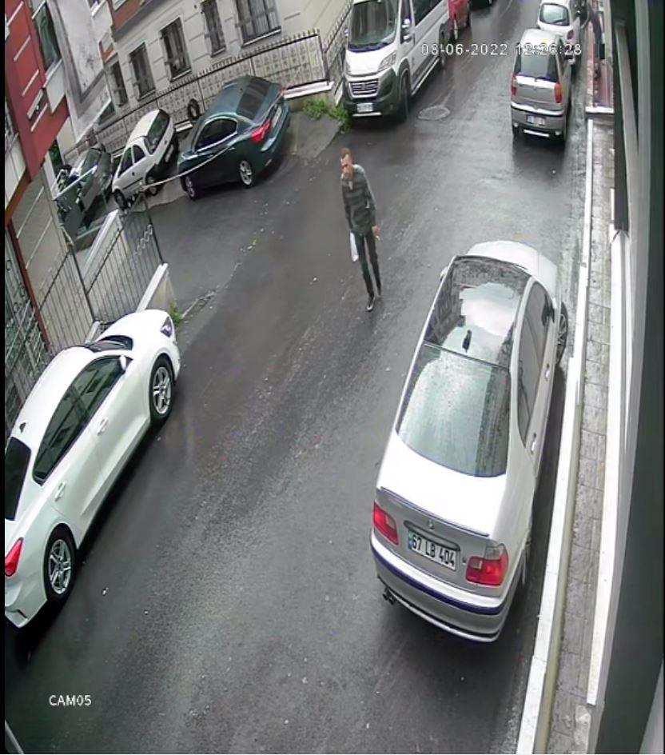
FOTO-2
Beyaz poşetli, yeşil çizgili
gömlekli,tabanı beyaz
ayakkabılı şüpheli şahsımız
FOTO-3
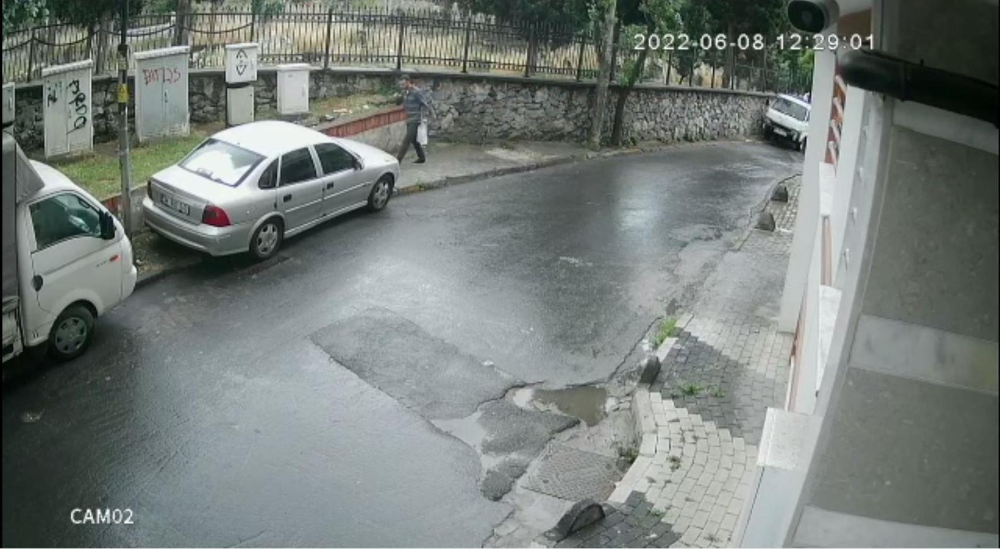
WhatsApp Video 2022-06-16 at 22.08.30 isimli kamerada 08/06/2022 günü kamera saatine göre 12:28:51 de şüpheli çizgili gömlekli içinde beyaz swit olan elinde beyaz poşet olan şüpheli şahıs kameranın görmediği bir açıda ellerine beyaz eldiven taktığı elindeki poşet ile Feriköy Mezarlığa tırmandığı akabinde mezarlık içinde kaybolduğu tarafımızca görülmüştür.
FOTO-1
Beyaz poşetli, yeşil çizgili
gömlekli,tabanı beyaz
ayakkabılı şüpheli şahsımızın
parmaklıklara yönelme anı
FOTO-2
FOTO-3
FOTO-4
Beyaz poşetli, yeşil çizgili
gömlekli,tabanı beyaz
ayakkabılı şüpheli şahsın
eldiven ile parmaklıklara
yönelme anı
FOTO-5
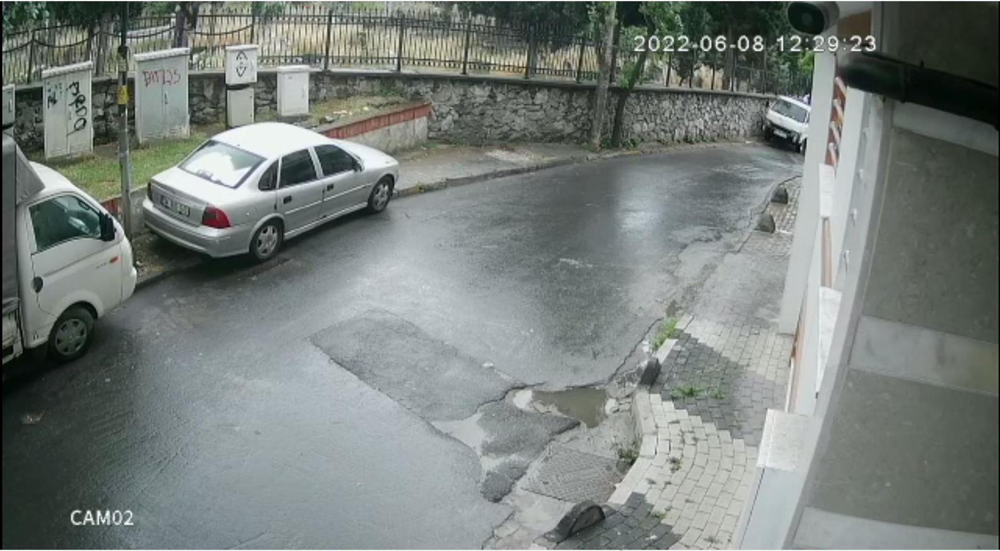
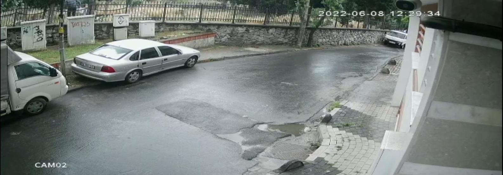
Beyaz poşetli, yeşil çizgili
gömlekli,tabanı beyaz
ayakkabılı şüpheli şahsın
eldiven ile parmaklıklardan
atlama anı
FOTO-6
FOTO-7
FOTO-8
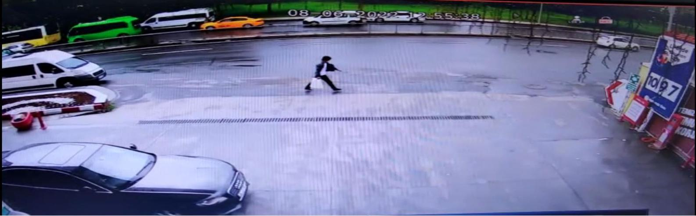
WhatsApp Video 2022-06-16 at 22.34.57 isimli kamerada 08/06/2022 günü kamera saatine göre 12:50:52 de şüpheli çizgili gömlekli beyaz thişörtlü şahsın feriköy mezarlığı içerisinde 22 dakikalık bir sürede kafasına peruk tatkığı ve elindeki beyaz poşeti değiştirerek gömleğinin önünü açarak halil rıfat paşa tarafından olay yerine doğru ilerlediği tarafımızca görülmüştür.
Şüpheli şahsın mezarlık sonrası
peruklu,gömleğin önü
açık,poşetli olarak ilerlediği an
WhatsApp Video 2022-06-16 at 22.44.58 isimli kamerada 08/06/2022 günü kamera saatine göre 12:55:38 de şüpheli erkek şahsın halil Rıfat paşa caddesinde bulunan AYTEMİZ petrol isimli işletmenin önünden geçerek olayın gerçekleştiği adrese doğru ilerlediği tarafımızca değerlendirilmiştir
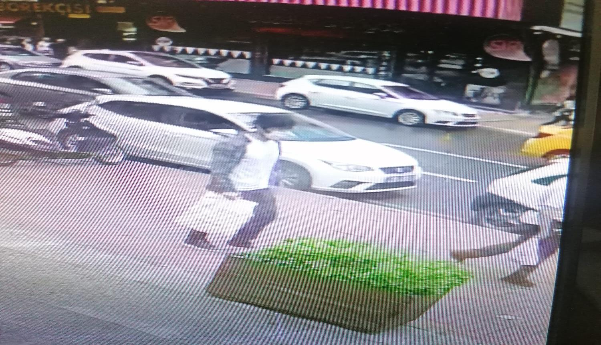
WhatsApp Video 2022-06-16 at 21.54.02 isimli kamerada video izleme proğramın 00:05 sn de şüpheli çizgili gömlekli cerrahi maskeli beyaz eldivenli beyaz poşetli kafasında peruk takılı şahsın bahse konu evden hırsızlık konusunun olduğu adrese doğru ilerlediği tarafımızca görülmüştür.
Şüpheli şahsın
peruklu,gömleğin önü
açık,poşetli ve tabanları beyaz
olarak ayakkabı ile bahsekonu
eve yaklaştığı an
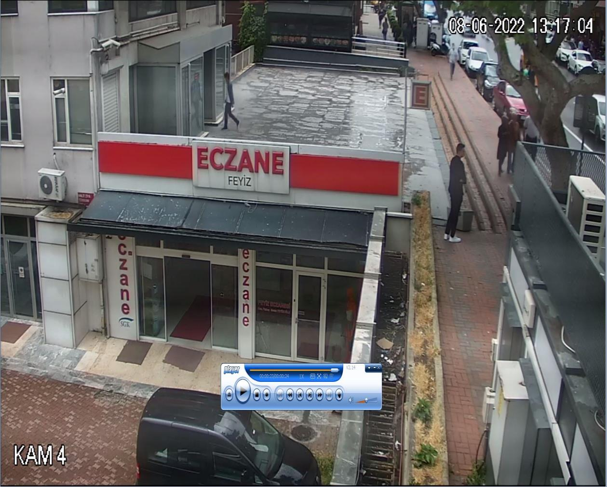
XVR_ch4_main_20220608131640_20220608131705 isimli kamerada 08/06/2022 günü kamera saatine göre 13:17:01 şüpheli beyaz poşetli peruklu şahsın bahse konu olayın gerçekleştiği binaya
giriş
yaptığı
tarafımızca
görülmüştür.
Şüpheli şahsın binaya yöneldiği anı
FOTO-1
Şüpheli şahsın binaya giriş anı
FOTO-2
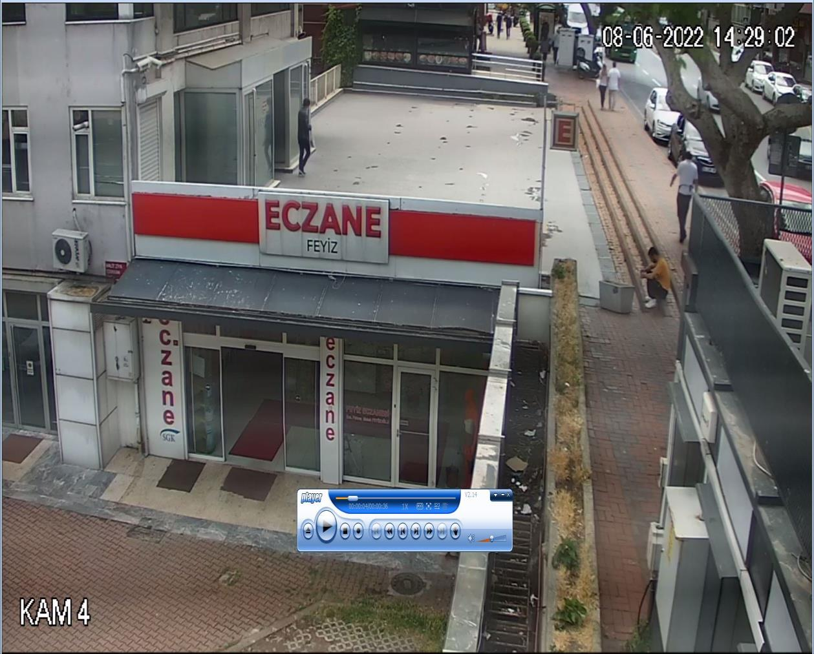
XVR_ch8_main_20220608131640_20220608131705 isimli kamerada 08/06/2022 günü kamera saatine göre 13:17:01 şüpheli beyaz poşetli peruklu şahsın bahse konu olayın gerçekleştiği binaya giriş yaptığı tarafımızca görülmüştür.
FOTO-1
XVR_ch4_main_20220608142858_20220608142935 isimli kamerada 08/06/2022 günü kamera saatine göre 14:29:07 şüpheli beyaz poşetli peruklu şahsın bahse konu olayın gerçekleştiği binadan elinde beyaz poşet ile tekrar çıkış yaptığı tarafımızca görülmüştür.
Şüpheli şahsın binadan çıkış anı
FOTO-1
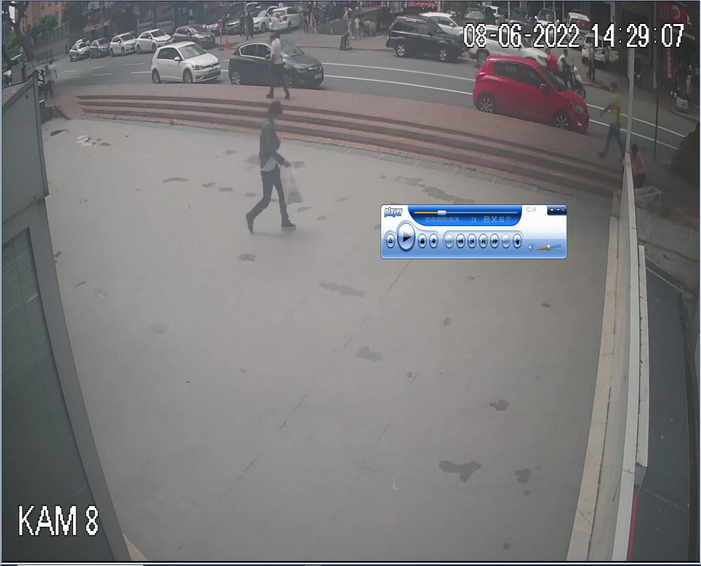
Şüpheli şahsın binadan çıkış anı
FOTO-2
XVR_ch8_main_20220608142858_20220608142935 isimli kamerada 08/06/2022 günü kamera saatine göre 14:29:07 şüpheli beyaz poşetli peruklu şahsın bahse konu olayın gerçekleştiği binadan elinde beyaz poşet ile tekrar çıkış yaptığı tarafımızca görülmüştür.
Şüpheli şahsın binadan çıkış anı
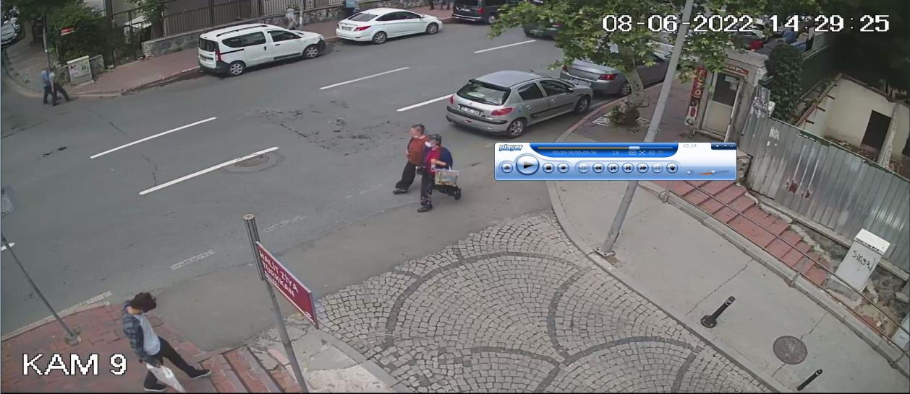
XVR_ch7_main_20220608142858_20220608142935 isimli kamerada 08/06/2022 günü kamera saatine göre 14:29:22 de şüpheli beyaz poşetli peruklu şahsın bahse konu olayın gerçekleştiği binadan elinde beyaz poşet ile uzaklaştığı tarafımızca görülmüştür.
Şüpheli şahsın binadan uzaklaşma anı
XVR_ch9_main_20220608142858_20220608142935 isimli kamerada 08/06/2022 günü kamera saatine göre 14:29:22 de şüpheli beyaz poşetli peruklu şahsın bahse konu olayın gerçekleştiği binadan elinde beyaz poşet uzaklaştığı tarafımızca görülmüştür.
Devamında yapılan kamera görüntüleri incelendiğinde şüpheli şahsın Pr. Cemil Taşçıoğlu Hastanesinin İçerisinden zikzaklar çizerek piyalepaşa bulvarına geçtiği akabinde kameralardan kaçarak tekrar toprak yolardan geçerek Feriköy mezarlığı yönüne ilerlediği düşünülerek olaya gider iken mezarlığa demir parmaklıklardan atladığı kamera açısı dikkatlice incelendiğinde şüpheli şahsın peruksuz olarak mezarlığa girdiği demir parmaklıklardan poşeti ve gömleğini mezarlık içerisinde kameralar mevcut olmadığı için bıraktığı ardından tekrar normal vatandaş gibi demir parmaklıklardan atlayarak mezarlık bitişiğindeki parka doğru ilerlediği tarafımızca görülmüştür.
WhatsApp Video 2022-06-16 at 22.08.13 isimli kamerada Şüpheli şahsın mezarlık içerisinden
PERUK,GÖMLEK VE ELİNDEKİ POŞETİ
bırakarak demir parmaklıklara doğru
geldiği an
FOTO-1
Şüpheli şahsın mezarlık içerisinden
PERUK,GÖMLEK VE ELİNDEKİ POŞETİ
bırakarak demir parmaklıklara tırmandığı
an
FOTO-2
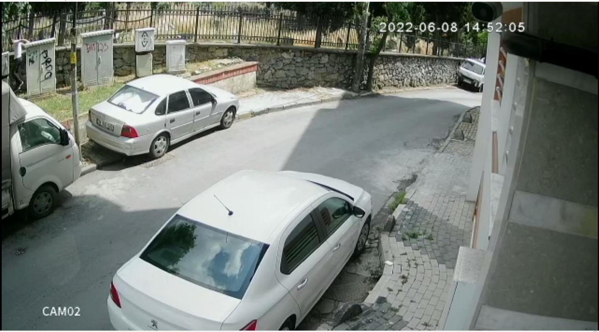
FOTO-3
Şüpheli şahsın mezarlık içerisinden
PERUK,GÖMLEK VE ELİNDEKİ POŞETİ
bırakarak demir parmaklıklardan zıplama
anı
FOTO-4
WhatsApp Video 2022-06-16 at 23.16.57 isimli kamerada 08/06/2022 günü kamera saatine göre 14:52:16 da şüpheli şahıs elidvenlerini, peruğunu, üzerindeki çizgili gömleğini ve elinde bulunan poşeti Feriköy mezarlığı içerisinde saklayarak normal bir insan gibi mezarlık bitişiğindeki parka girerek gözden kaybolduğu tarafımızca görülmüştür.
Şüpheli şahsın mezarlık bitişiğinden
uzaklaşma anı
Şüpheli şahsın net fotoğraflarında daha önce idaremizde işlem gören T.C.34438075712
İbrahim AKTAŞ isimli şahıs olduğu tarafımızca tespit edilmiş olup POLNET-4 üzerinden yapılan incelemelerinde mernis adresinin Paşa Mah. Turanbey Sok. No:5 İç Kapı 1A ŞİŞLİ/İSTANBUL sayılı adres olduğu görülmesi üzerine bahse konu şüpheli şahsın Feriköy mezarlığından çıktığında gittiği istikamette yaklaşık 50m sonra merniste kayıtlı evine doğru ilerlediği anlaşılmış olup şahsın daha öncede POLNET-4 üzerinden yapılan incelemelerinde en son 2020 yılında yine elinde poşet ile kağıthane bölgesinde kapı göbeği patlatarak evden hırsızlık konusunda tutuklandığı tarafımızca anlaşılmış olup şüpheli şahsın kimliğini gizlemek maksatı ile tanınmamak için peruk takarak evden hırsızlık konularını gerçekleştirdiği kapı göbeğini patlatmak için yanında taşıdığı poşette aparat olduğu için ikamet adresinede dikkat çekmemesi için mezarlık içerisinde poşetle beraber peruğu da saklayarak evine gittiği tarafımızca değerlendirilmiş olup bahse konu evden hırsızlık konusunu gerçekleştiren şahsın İbrahim AKTAŞ olduğu tespit edilmiştir.
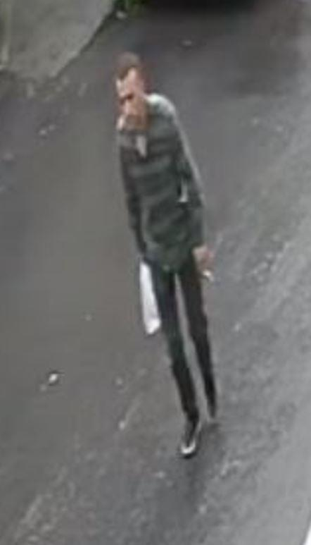
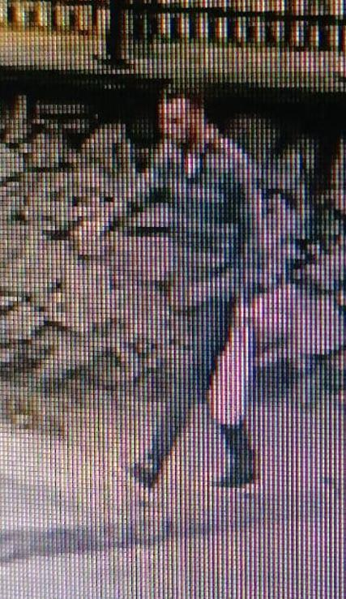
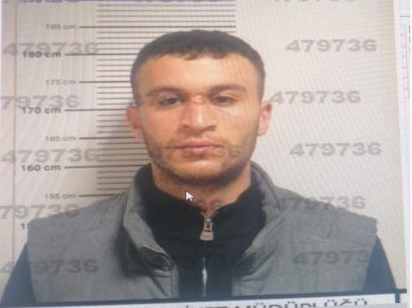


Peruksuz hali
Peruklu hali
Tabanı beyaz ayakkabı
İş Bu Görüntü izleme ve Tespit tutanağı tarafımızca altı birlikte imza altına alınmıştır.18/06/2022 günü Saat:16:00
355294
367148
385185
479736
P.M
P.M
P.M
P.M